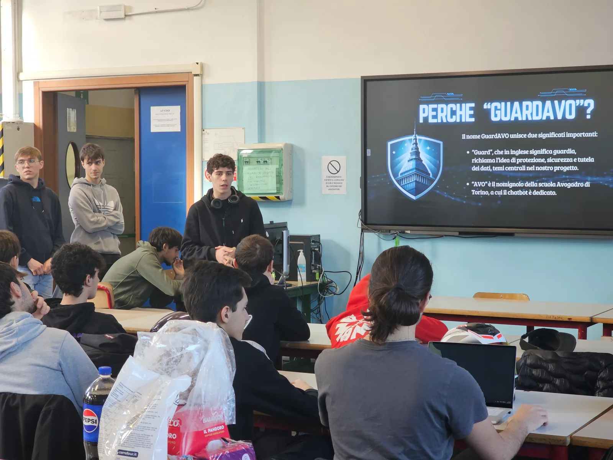
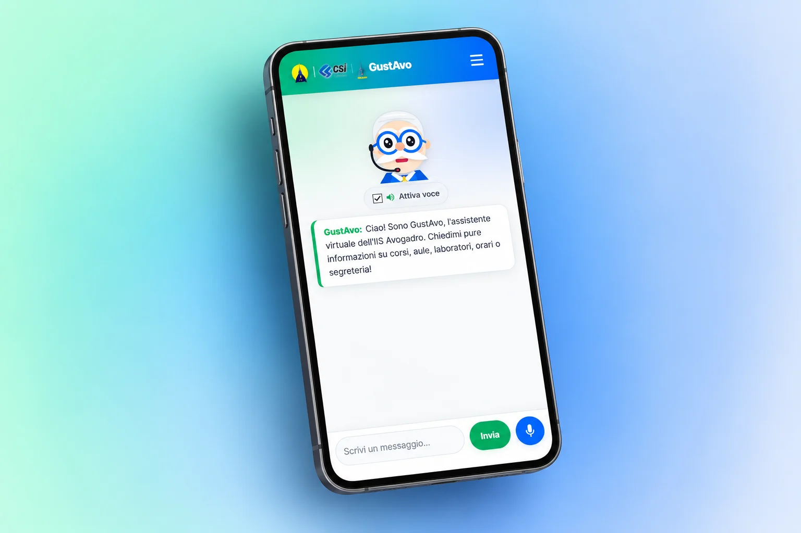

Dispersione informativa
Studenti e genitori necessitano di un canale chiaro, disponibile in ogni momento, che fornisca risposte attendibili senza dover cercare tra decine di circolari e PDF. Canale unico e accessibile .
Il video-racconto del percorso realizzato dalla classe 5CI con CSI Piemonte all'interno di Storie di alternanza.
Dalla difficoltà di orientarsi tra le informazioni della scuola all’idea di una soluzione tecnologica concreta.
Studenti e genitori necessitano di un canale chiaro, disponibile in ogni momento, che fornisca risposte attendibili senza dover cercare tra decine di circolari e PDF. Canale unico e accessibile .
Studenti e genitori hanno bisogno di un canale chiaro, disponibile in ogni momento. Abbiamo raccolto le domande più comuni e verificato le risposte con i docenti, per aiutare chi sceglie la scuola senza costringerlo a cercare in tanti documenti.
GustAvo riunisce le risposte chiave in una chat utilizzabile da PC e smartphone. Un assistente virtuale pensato da noi studenti per semplificare la scelta del percorso e la conoscenza dei servizi della scuola.
GustAvo è cresciuto tra gli incontri con CSI Piemonte e il lavoro all'Avogadro.

Gli incontri al CSI
Gli incontri sull’AI con CSI Piemonte ci hanno spinto a fare un passo in più: non limitarci a sviluppare dei semplici concept, ma concretizzare l’idea creando un nostro chatbot raccogliendo le risposte alle domande più comuni.

Il lavoro in classe
Abbiamo raccolto le informazioni, scritto le risposte e ottimizzato il codice. Una domanda alla volta, abbiamo corretto quello che non funzionava e imparato a lavorare insieme.

Il progetto prende forma
Il risultato è GustAvo: un aiuto per conoscere indirizzi, materie e laboratori. Un progetto fatto da noi studenti, per chi sarà al nostro posto nei prossimi anni.
Un’architettura leggera, sviluppata con tecnologie aperte, cerca la risposta più adatta tra quelle che abbiamo preparato.
Da PC o smartphone scrivi liberamente dubbi sull’offerta formativa e sui servizi, come parleresti a una persona: «Quante ore di laboratorio ci sono?»
Nel modello TF-IDF del progetto originale, Python e Scikit-learn trasformano il testo in vettori numerici. Il sistema può così confrontare la domanda con gli esempi raccolti.
Valuta la somiglianza con gli intenti, cioè gli argomenti delle domande, e seleziona la risposta associata. Abbiamo testato più metodi di classificazione, descritti nella documentazione tecnica.
La risposta compare nella chat. Se non trova una corrispondenza sufficiente, ti chiede di riformulare.